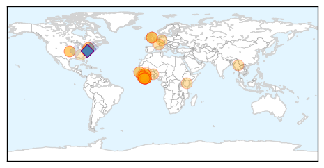

30 Day Trends
Web: 0 alerts, 0 warnings
Twitter: 7 alerts, 17 warnings
Top Articles:
- 1.000
- WHO declares end of Ebola outbreak in Sierra Leone, but neighbour Guinea struggles to end virus
- 1.000
- Ebola reappears in Liberia, leaving the question: Why?
- 1.000
- Ebola reappears in Liberia, leaving the question: Why?
- 1.000
- Three New Cases Reported from Liberia
- 0.999
- New Ebola outbreak in Liberia: 3 cases confirmed
- 0.999
- Three new ebola cases detected in Liberia
- 0.999
- Experts point finger to WHO for shocking failure on Ebola as three new cases in Liberia detected
- 0.999
- Liberia on alert as three new Ebola cases are confirmed
- 0.999
- 10 things you need to know today
- 0.997
- New Ebola cases reported in Liberia
- 0.997
- Liberia monitors over 150 Ebola contacts
- 0.997
- WHO's 'slow', 'ineffective' response to Ebola crisis caused thousands of unnecessary deaths: expert report
- 0.996
- Ebola Response was ‘$5 Billion Scramble’ Leaving Thousands Dead
- 0.995
- Ebola Virus Resurfaces In Liberia
- 0.995
- Health panel slams WHO over Ebola response
- 0.995
- We Blew It With Ebola. Scientists Don't Want That to Happen Again
- 0.995
- Quarantined Persons Urge Liberians to Pray for Them
- 0.995
- Ebola Is Back In Liberia, Hits Three
- 0.994
- An indictment of Ebola response
- 0.993
- WHO criticized for Ebola response
- 0.989
- Ebola in africa august 2015 Mp3 indir video ve müzik yükle
- 0.988
- The Ebola crisis exposed how the global health system can't handle outbreaks
- 0.985
- The U.S. Response to Ebola: Status of the FY2015 Emergency Ebola Appropriation
- 0.978
- Sierra Leone Government Recognized & Awarded for Successful Ebola Fight
- 0.978
- Experts Say WHO Bungled Ebola Response In West Africa
- 0.975
- Is Yet Another Ebola Report a Symptom of the Problem or the Solution?
- 0.961
- President Koroma kickstarts Post-Ebola "Thank you Tour" in Eastern Sierra Leone
- 0.952
- S/Leoneans in Gambia celebrate end to Ebola
- 0.951
- Experts criticise WHO delay in sounding alarm over Ebola outbreak
- 0.951
- UE House of Chiefs strategizes for prevention of Ebola
- 0.939
- Panels Advise Bolstering W.H.O. for Crises Like Ebola
- 0.930
- S/Leoneans in Gambia celebrate end to Ebola
- 0.915
- Report calls for overhaul of WHO after Ebola crisis
- 0.869
- EU Parliamentary Team told of Ebola effect in Lunsar
- 0.839
- CMO expresses MOHS readiness to improve Status of Emergency Obstetric and Newborn Care in Sierra Leone
- 0.815
- WHO 'inaction' played key role in Ebola spread
- 0.812
- IMF on the new airport and Ebola dominate Sierra Leone newspapers
- 0.771
- Georgetown health law experts propose fundamental reform for International Health Regulations
- 0.754
- Clinical RM, CWRU to Fund Medical Research Center
- 0.745
- Georgetown Law experts propose revisions for international health regulations
- 0.715
- Nurses Key to Revolution in Mental Health Care
- 0.636
- Daily Podcast – November 23, 2015
- 0.632
- UNFPA Turns Over 3 Ambulances, 35 Motorbikes to MOH
- 0.549
- VP Foh Receives British Red Cross Director
- 0.501
- Reform in Drug Law; Sierra Leone Should Harmonize Drug Policies
Top Tweets:
- 0.998
- Ebola virus disease in Liberia - https://t.co/LQ5vp32MaT ebola
- 0.998
- Ebola Outbreak: Health Experts Panel Criticizes WHO For 'Slow' Response To Epidemic - https://t.co/LcflWlD6g7 ebola
- 0.997
- Health experts call out WHO's 'delayed' response to Ebola epidemic - https://t.co/jOnHJkf0vx ebola
- 0.996
- Thousands died needlessly from ebola because the World Health Organisation's response to the ... - https://t.co/VfUaJRRycl ebola
- 0.996
- Health panel slams WHO over Ebola response - https://t.co/dwNpssxInu ebola
- 0.996
- Experts Slam WHO Over Delayed Response To Ebola Outbreak - https://t.co/tgGuTj39xi ebola
- 0.996
- BREAKING EBOLA !!! 3 EBOLA CONFIRMED CASES TODAY! https://t.co/snnsEct17a
- 0.995
- World Health Organisation condemned over slow response to Ebola outbreak - https://t.co/W1s17ZrQGH ebola
- 0.995
- World Health Organisation condemned over slow response to Ebola outbreak - https://t.co/AUxPs3Au3F ebola
- 0.995
- WHO condemned over response to Ebola outbreak - https://t.co/WLyIbqGAgP ebola
- 0.995
- Epidemic warning unless world learns from ebola - https://t.co/RNYatfv42K ebola
- 0.994
- Study: WHO response to Ebola outbreak too slow - https://t.co/HDSo86jf1j ebola
- 0.994
- BrusselsLockdown BrusselsAlert Brussel ebola BREAKING EBOLA !!! 3 NEW CONFIRMED CASES TODAY! https://t.co/snnsEct17a
- 0.994
- BREAKING EBOLA 3 NEW CONFIRMED EBOLA CASES TODAY!
- 0.993
- Report slams WHO response to Ebola - https://t.co/IKzwPnXPRa ebola
- 0.993
- Global response to Ebola epidemic slammed - https://t.co/s9eJ54KvEu ebola
- 0.993
- Ebola - 153 Contacts Under Surveillance – 3 Confirmed Cases - https://t.co/n5JwxcTXMj ebola
- 0.992
- The Ebola crisis exposed a problem much scarier than Ebola - https://t.co/yIXXDgWXPh ebola
- 0.992
- The Ebola crisis exposed a problem much scarier than Ebola - https://t.co/95BLCZpjLd ebola
- 0.989
- The US Response to Ebola: Status of the FY2015 Emergency Ebola Appropriation - https://t.co/n7RHerlFwV ebola
- 0.989
- Slow reaction by World Health Organisation to Ebola virus criticised by experts - https://t.co/mg9rM66V8b ebola
- 0.989
- Independent Health Review: Ebola Response for West Africa Was - https://t.co/p1W9LBzfuO ebola
- 0.989
- Global response to Ebola outbreak slammed by independent panel - https://t.co/JKeDzGdeh3 ebola
- 0.989
- An indictment of Ebola response - https://t.co/e5XKnaOvZv ebola
- 0.988
- BREAKING EBOLA !!! 3 NEW EBOLA CONFIRMED CASES TODAY! https://t.co/snnsEct17a
- 0.988
- BREAKING EBOLA !!! 3 NEW EBOLA CONFIRMED CASES TODAY! https://t.co/snnsEct17a
- 0.988
- BREAKING EBOLA !!! 3 NEW EBOLA CONFIRMED CASES TODAY! https://t.co/snnsEct17a
- 0.988
- BREAKING EBOLA !!! 3 NEW EBOLA CONFIRMED CASES TODAY! https://t.co/snnsEct17a
- 0.988
- BREAKING EBOLA !!! 3 NEW EBOLA CONFIRMED CASES TODAY! https://t.co/snnsEct17a
- 0.988
- BREAKING EBOLA !!! 3 NEW EBOLA CONFIRMED CASES TODAY! https://t.co/snnsEct17a
- 0.988
- BREAKING EBOLA !!! 3 NEW EBOLA CONFIRMED CASES TODAY! https://t.co/snnsEct17a
- 0.988
- BREAKING EBOLA !!! 3 NEW EBOLA CONFIRMED CASES TODAY! https://t.co/snnsEct17a
- 0.988
- BREAKING EBOLA !!! 3 NEW EBOLA CONFIRMED CASES TODAY! https://t.co/snnsEct17a
- 0.988
- BREAKING EBOLA !!! 3 NEW EBOLA CONFIRMED CASES TODAY! https://t.co/snnsEct17a
- 0.988
- BREAKING EBOLA !!! 3 NEW EBOLA CONFIRMED CASES TODAY! https://t.co/snnsEct17a
- 0.988
- BREAKING EBOLA !!! 3 NEW EBOLA CONFIRMED CASES TODAY! https://t.co/snnsEct17a
- 0.988
- BREAKING EBOLA !!! 3 NEW EBOLA CONFIRMED CASES TODAY! https://t.co/snnsEct17a
- 0.988
- BREAKING EBOLA !!! 3 NEW EBOLA CONFIRMED CASES TODAY! https://t.co/snnsEct17a
- 0.986
- Harvard-convened health panel slams WHO over Ebola response - https://t.co/Ebc0UynGfn ebola
- 0.986
- Experts criticise WHO delay in sounding alarm over Ebola outbreak - https://t.co/PYScUJmxJt ebola
- 0.986
- Experts criticise WHO delay in sounding alarm over Ebola outbreak - https://t.co/A4vDBpqrPB ebola
- 0.985
- The US Response to Ebola: Status of the FY2015 Emergency Ebola Appropriation - Kaiser Family Foundation https://t.co/hXV8nz3Q5J ebola EVD
- 0.985
- 'Too slow' international response - WHO's failure to blame for Ebola outbreak, say health experts - https://t.co/sAw7sCO9yY ebola
- 0.984
- Independent Ebola Report - https://t.co/vIzBBIxHq7 ebola
- 0.984
- Experts Slam WHO's 'Slow' Response On Ebola - https://t.co/PHupGAIVBO ebola
- 0.983
- Medical officials in Liberia monitor 153 people after Ebola re-emerges - https://t.co/3cfVa6mtpf ebola
- 0.983
- Global response to ebola in West Africa slow and inadequate - https://t.co/FQkCrimL2c ebola
- 0.983
- Ebola: Health experts create roadmap to prevent next global health crisis - https://t.co/W6pjwc1JBT ebola
- 0.983
- Refugees with Ebola !!! BREAKING EBOLA 3 NEW CONFIRMED CASES TODAY! https://t.co/snnsEcKBYI
- 0.982
- Ebola Re-Emerges in Liberia - https://t.co/1kTJ5p3NTv ebola
Showing top 50 tweets...
Web/News Articles

Tweets

Article Locations
Article Confidences